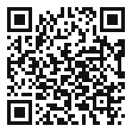
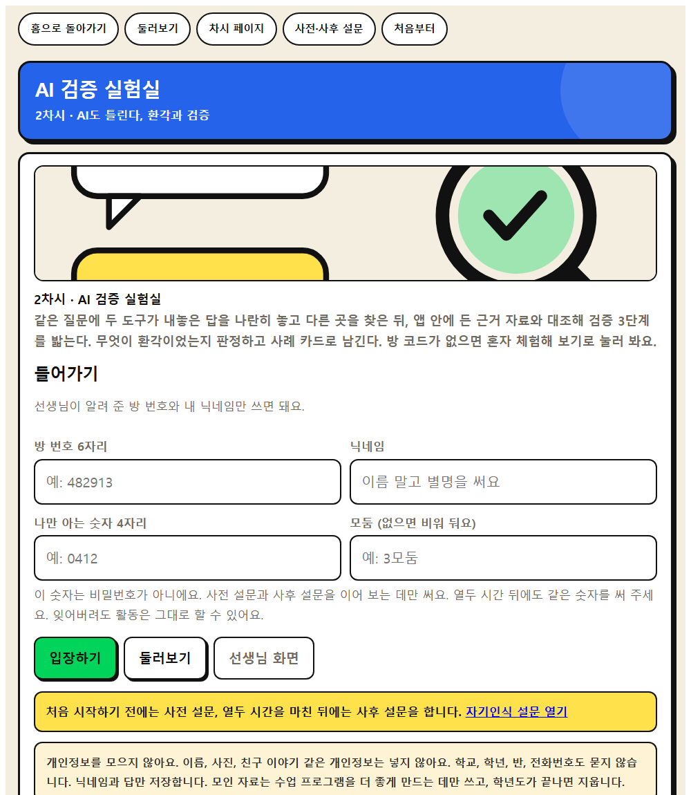
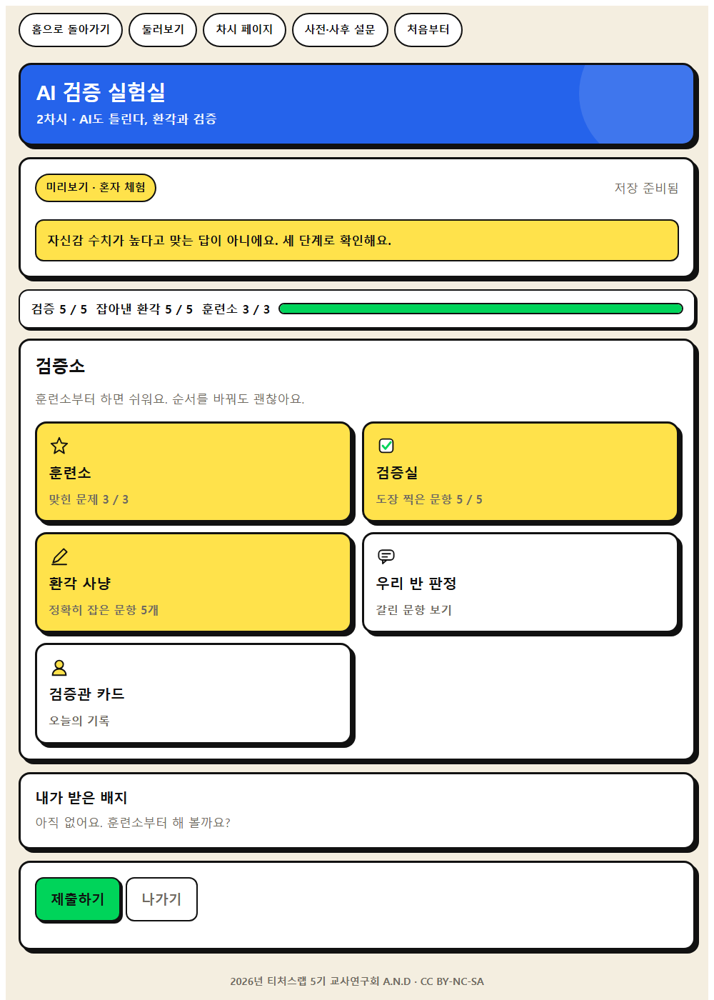
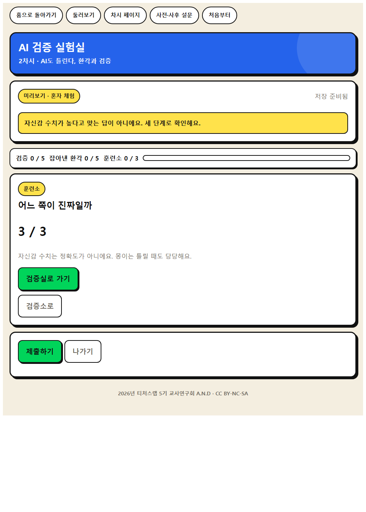
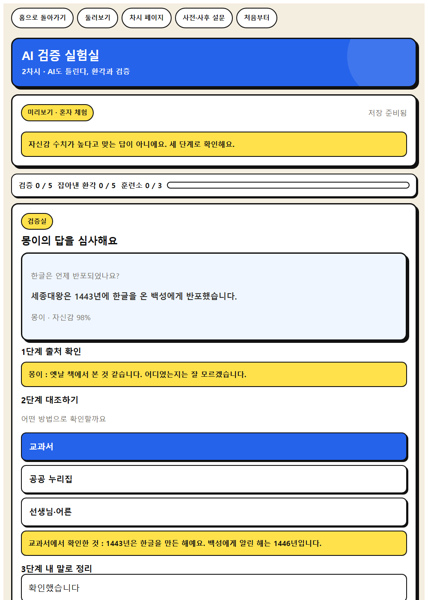
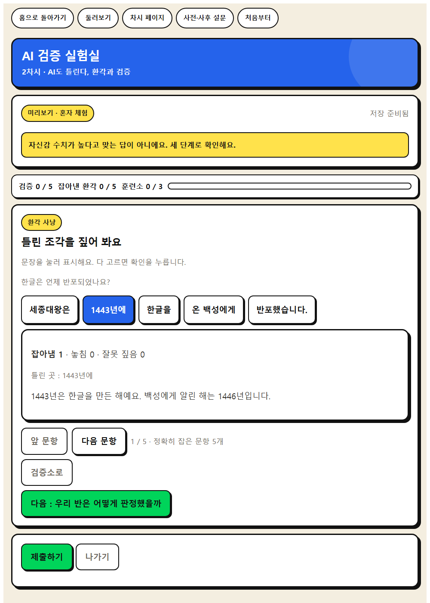
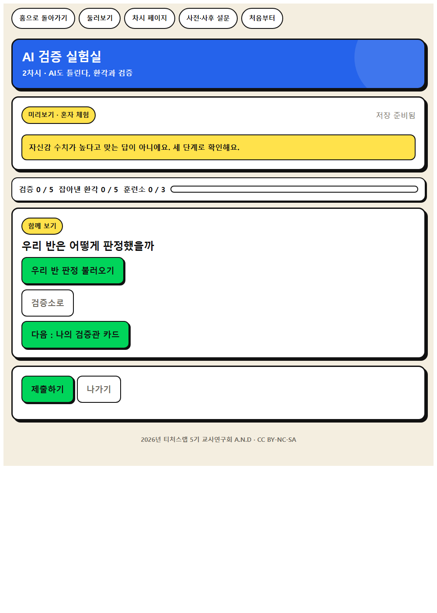
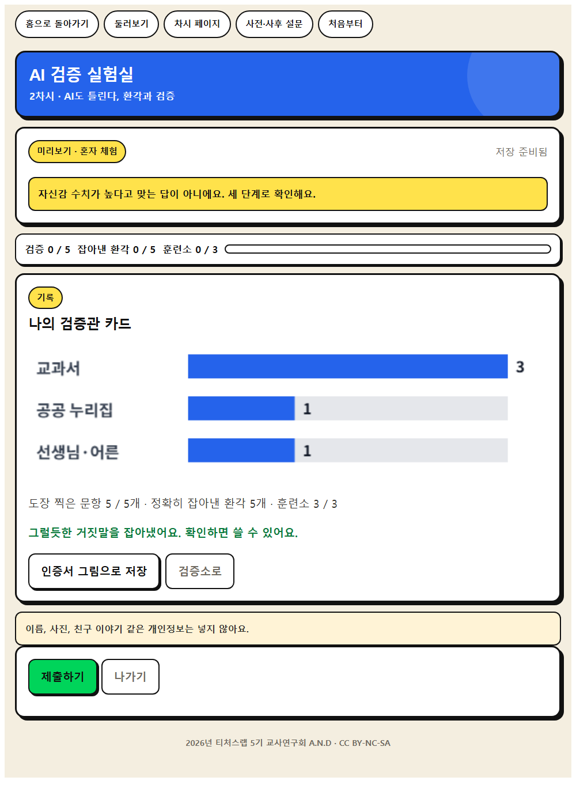

인간중심 사고를 기르는 AI적정활용 수업 WISE · 모듈1 WISE 발견
02
AI의 답이 정말 맞는지 확인하는 방법을 찾아봅시다.
오늘의 학습 문제
AI는 내 생각을 도와주는가, 아니면 대신해 주는가
오늘 기르는 힘
AI 답의 근거와 출처를 확인하고 다른 정보원과 비교하여 정확성 확인하기
AI의 일반적인 답이 우리 상황과 학년 수준에 맞는지 검토하기
⑤ 비판적 AI 리터러시와 검증 가능성
도입 · 5분
도입 · 동기 유발
우리 학교가 언제 문을 열었는지 AI에게 물어보았습니다. 이 답이 맞을까요?
AI가 자신 있게 틀린 답을 말하는 것을 무엇이라고 부를까요?
도입 · 학습 문제 확인
AI의 답이 정말 맞는지 확인하는 방법을 찾아봅시다.
도입 준비물과 유의점
☆ 학교 관련 AI 답변 화면
★ 학습문제 PPT
△ 특정 서비스 비방으로 흐르지 않게 안내
웹앱으로 합니다
같은 질문에 두 도구가 내놓은 답을 나란히 놓고 다른 곳을 찾은 뒤, 앱 안에 든 근거 자료와 대조해 검증 3단계를 밟는다. 무엇이 환각이었는지 판정하고 사례 카드로 남긴다.

선생님 화면 → 새 방 만들기 → 여섯 자리 방 번호를 칠판에 적습니다.
학생은 QR 을 찍거나 주소를 열고 방 번호와 닉네임을 넣습니다.

방 번호 여섯 자리와 닉네임만 넣습니다. 이름을 묻지 않습니다.
나만 아는 숫자 네 자리는 사전 설문과 사후 설문을 잇는 데만 씁니다.

웹앱 1단계
1단계 나는 이 답을 믿을까

웹앱 2단계
2단계 같은 질문, 다른 답

웹앱 3단계
3단계 근거 자료와 대조하기

웹앱 4단계
4단계 환각 사례 카드 만들기

웹앱 5단계
5단계 판정 결과와 배움 정리

웹앱 6단계
결과 카드
교사 화면
문항별 판정 분포, 학급 정답률, 학생이 만든 환각 사례 카드 모음, 배움 문장
결과 크게 띄우기를 누르면 학급 화면으로 함께 봅니다. CSV 로 내려받고, 수업이 끝나면 방을 잠급니다.
전개 · 30분
전개 · [활동 1] 같은 질문, 다른 답
같은 질문을 두 가지 도구에 넣어 봅시다. 답이 같은가요?
답이 다르다는 것은 무엇을 뜻할까요?
전개 · [활동 2] 검증 3단계 익히기
① 출처 확인, ② 교과서·공공 누리집과 대조, ③ 내 말로 정리 순서로 확인해 봅시다.
확인해 보니 무엇이 달라졌나요?
전개 · [활동 3] 환각 사례 카드 만들기
찾아낸 환각 사례를 카드 2장에 적고, 어떻게 확인했는지 함께 적어 봅시다.
전개 준비물과 유의점
☆ 생성형 AI(교사 시연 또는 모둠 공용)
★ 교차 검증 기록지
★ 웹앱 AI 검증 실험실
△ 사실 확인이 되는 질문으로 한정
△ 개인 이름을 넣어 검색하지 않도록 지도
정리 · 5분
정리 · 배움 정리
AI의 답을 받았을 때 가장 먼저 할 일은 무엇인가요?
정리 · 다음 차시 예고
다음 시간에는 AI의 답에 숨은 치우침을 찾아봅시다.
정리 준비물과 유의점
★ 배움 공책
△ 검증 3단계를 교실 게시물로 남기기
오늘 쓰는 웹앱
같은 질문에 두 도구가 내놓은 답을 나란히 놓고 다른 곳을 찾은 뒤, 앱 안에 든 근거 자료와 대조해 검증 3단계를 밟는다. 무엇이 환각이었는지 판정하고 사례 카드로 남긴다.
선생님 화면에서 여섯 자리 코드를 만들어요.
코드와 비밀번호, 닉네임만 쓰면 돼요.
고쳐서 다시 제출해도 괜찮아요.
결과 크게 띄우기로 우리 반 결과를 봐요.
웹앱으로 40분 쓰기
활동지
기기가 부족해도 함께합니다
기기가 부족하면 교사 화면 하나로 함께 진행한다. 두 답과 근거 자료를 인쇄해 모둠에 나눠 주고 같은 순서로 대조하면 된다.
지도 유의점
사실 확인이 가능한 질문으로만 한정한다. 이 앱은 그런 질문 다섯 개만 담고 있다.
개인 이름을 넣어 검색하지 않는다. 이 앱에서는 학생이 직접 질문을 넣지 않는다.
특정 서비스 비방으로 흐르지 않게 한다. 도구 이름을 가 나로만 적었다.
답이 갈리는 문항은 질문이 흐릿해서 갈린다는 점을 짚는다. 틀린 것과 다른 것은 다르다.
오늘 여기까지
AI도 편견을 가질까
2026년 티처스랩 5기 교사연구회 A.N.D · CC BY-NC-SA